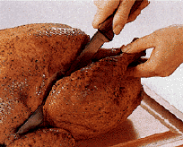

|

|

Removing the drumstick.
|
|
|
After
removing the turkey from the oven, let it stand for 15 to 20 minutes before
carving to let the flesh firm up so the carved slices will hold together.
Cover the bird with foil to keep it warm. (Use a sharp carving knife or an
electric knife for slicing.)
Place
bird on a carving board. Remove the stuffing. Then, grasp the tip of one
drumstick with your fingers and pull the leg away from the body. Cut
through the skin and meat between the drumstick-thigh piece and body as
shown. This exposes the joint where the thighbone and backbone connect.
With the tip of a knife, disjoint the thighbone from the backbone by
cutting through the joint. Repeat on other side.
To separate the thigh and drumstick, cut
through the joint where the leg and thigh bones meet. Repeat on the other
piece.
Hold
the drumstick vertically by the tip with the large end down. Slice meat
parallel to the bone and under some tendons, turning the leg to get even
slices.
Next,
slice the thigh meat by cutting slices parallel to the bone. Repeat
with the remaining drumstick and thigh.
|